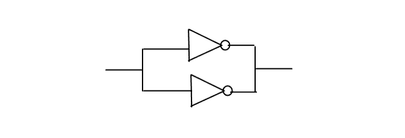

| Description | This rule fires when Leda detects parallel inverters in the design. Inverters that share the same input signal and drive the same net are called parallel inverters. You may need to confirm such inverters in some cases. |
| Policy | DESIGN |
| Ruleset | STRUCTURE |
| Language | VHDL/Verilog |
| Type | Hardware |
| Severity | Error |
This is an example of invalid Verilog code, followed by a circuit diagram that illustrates the problem:
module ntl_str27_top ; ... wire net_01, net_01_inv; not I0(net_01_inv, net_01); not I1(net_01_inv, net_01); // NTL_STR27 fires -- parallel inverters ... endmodule